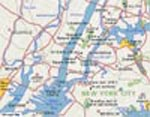

|
Maurice D. Henderson1851–1923 Maurice D. Henderson was the oldest son of Captain Joseph Henderson. He never married and died at the age of 72. |
||
|
Important
Facts
|
||

| 1851 | Maurice D. Henderson was born in Brooklyn, New York. He is the oldest son of Captain Joseph Henderson and Angelina Annetta Weaver. Source: 1860 US Census. |
 New York Map |
| 1860 | The 1860 Census lists J. Henderson (32), Ann (29), Sarah (10), Maurice (8), and Joseph (6) as living in the 9th Ward Brooklyn City, county of Kings. Source: 1860 US Census for 9th Ward Brooklyn City, County of Kings. | |
Maurice never married and lived for a time with his mother at 633 Willoughby Avenue, Brooklyn, New York. Source: "Mary's Family Connections," Copyright 1979, pg. 88. |
||
| July 26, 1870 | The 1870 US Federal Census lists Joseph (46), Angelina (38), Sarah R. (20), Maurice D. Henderson (18), Joseph Jr. (16), Mary Ann (10), Angelina A. (8), and Alexander D. (6). Source: 1870 US Census, 21-WD Brooklyn, Kings County, New York, Series: M593, Roll: 961, Part: 1, Page: 349A. | |
| 1880 | The 1880 U.S. Census lists Joseph (52) and Angelina (48) living at home with their three daughters, Sarah R. (30), Mary A. (20), Angelina A. (18), and three sons, 'Morris' Henderson (28), Joseph (26), and Alexander (15). Maurice was listed as sailmaker. Source: 1880 US Federal Census for 983 Myrtle Ave., Kings (Brooklyn), New York City-Greater, New York. | |
| October 7, 1890 | His father, Joseph Henderson, died at 633 Willoughby Avenue, Brooklyn, New York and was buried in the Green-Wood Cemetery in Brooklyn, New York. Lot 13244, Section 88. | |
| 1889-1890 | Maurice D. Henderson continued to live with his mother at their family home on Willoughby Avenue. He was listed at 633 Willoughby Avenue in the Brooklyn, New York Directories. His occupation was listed as Clerk. Source: Ancestry.com, Brooklyn, New York Directories, 1888-1890. | |
| February 18, 1892 | Maurice Henderson attended his brother's, Alexander D. Henderson, wedding to Miss Ella M. Brown, in Brooklyn, New York. Source: February 18, 1892 edition of the Brooklyn Daily Eagle newspaper. | |
| 1897-98 | He is listed as: "HENDERSON Morris D. h 633 Wil'by av." His mother is listed at the same address. Source: 1897-98 LAIN'S Brooklyn Directory. | |
| June 8, 1900 | The 1900 U.S. Census lists Angelina A Wilcox (68), daughter, Angelina 'Weaderson' (38), son, 'Morris T Weaderson' (46), nephew, Stanley W. Wilcox (17) and Louise Vollmer (19). Maurice's occupation is listed as sail making. Source: 1900 US. Census, Kings, Brooklyn Ward 21, Kings, New York; Roll: T623 1058; Page: 6A; Enumeration District: 336. | |
1910 |
Maurice was listed as "M. Henderson real estate 320 Tpkins Ave. h 639 Wilby Ave". Source: 1910 Brooklyn Directory. |  Brooklyn, New York Map. |
January 12, 1920 |
The 1920 U.S. Census lists Charles S. Hendrickson (52), Mary (50), Angelina (30), and Maurice Henderson (60) as brother-in-law, living on 639 Willoughby Avenue. Source: Brooklyn, New York, Kings County Census, Series: T625 Roll: 1153 Page: 110. | |
November 15, 1923 |
Maurice D. Henderson died. Source: The Green-Wood Cemetery Catalog of Heirs 2993. | |
| November 17, 1923 | Maurice’s younger brother, Alexander, wrote a letter to the Green-Wood Cemetery directing them to bury his brother in the family plot at the cemetery in Brooklyn. The letter was written on First Baptist Church stationary, which was in Bloomfield, New Jersey. In the letter Alexander wrote, “Gentlemen, Please open grave for remains of my brother Maurice Henderson in lot no. 13244 for Saturday Nov 17, 1923 at 11:30 A. M.” The letter was signed “A. D. Henderson.” Source: Green-Wood Cemetery's copy of letter from Alexander D. Henderson. |
|
|
November 17, 1923
|
Maurice was buried at the Green-Wood Cemetery in the family plot, lot #13244 and Section #88 of the same cemetery as his parents. Source: Green-Wood Cemetery burial inquiry results for Maurice Henderson. |

Last update: July 9, 2026: 4.59 PM